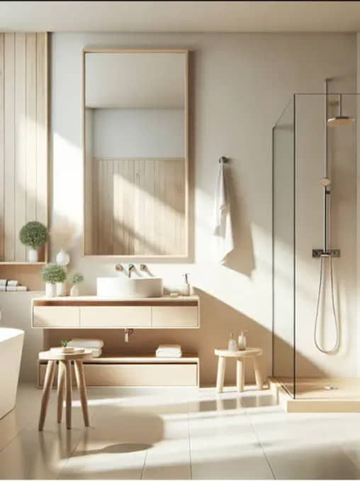

<!--DEV
@ @include('blocks/incut-block/incut-block.html', {
  "addClass": "incut-block--reversed"
})
-->

<article class="container  block-m  incut-block  @@addClass">
  <div class="row  incut-block__row">

    <div class="incut-block__text-col">
      <div class="incut-block__text-wrapper">
        <h2 class="display-2  incut-block__title">Why Renovate Your Home?</h2>
        <div class="h5  incut-block__text">
          <p>The importance of home renovations is a repeated topic of discussion. While some homeowners recognize the value of renovating, others may delay these projects due to financial concerns or future plans. However, postponing renovations can significantly impact your quality of life in general and lead to regrets down the line.</p>
          <p>When a house needs repairs, it seems to talk to you by making various sounds. And it can be a source of stress, anxiety and worry. Homes are always a work in progress and require constant maintenance.</p>
          <p>Keeping in good condition key areas of your home, such as kitchen or bathroom is essential for maximizing your enjoyment and overall well-being. They are well known as stress free zones where we enjoy the moments being together with our family or just by ourselves. Maintaining them can also save you money in the long run.</p>
        </div>

        <a href="#" class="btn">
          <span>Read more</span>
        </a>
      </div>
    </div>

    <div class="incut-block__img-col">
      <div class="embed-responsive embed-responsive--3-4  incut-block__img">
        <picture>
          <source srcset="img/vertical-4x3-1.webp" media="(min-width: 1440px)" type="image/webp">
          <source srcset="img/vertical-4x3-1.jpg" media="(min-width: 1440px)">
          <!-- 508x677, 762x1016 -->
          <source srcset="img/vertical-4x3-1.webp" media="(min-width: 1200px)" type="image/webp">
          <source srcset="img/vertical-4x3-1.jpg" media="(min-width: 1200px)">
          <!-- 640x853, 960x1280 -->
          <source srcset="img/vertical-4x3-1.webp" media="(min-width: 1024px)" type="image/webp">
          <source srcset="img/vertical-4x3-1.jpg" media="(min-width: 1024px)">
          <!-- 552x736, 828x1104 -->
          <source srcset="img/vertical-4x3-1.webp" media="(min-width: 480px)" type="image/webp">
          <source srcset="img/vertical-4x3-1.jpg" media="(min-width: 480px)">
          <!-- 672x896 -->
          <source srcset="img/vertical-4x3-1.webp" media="(min-width: 300px)" type="image/webp">
          <source srcset="img/vertical-4x3-1.jpg" media="(min-width: 300px)">
          <!-- 490x653 -->
          
        </picture>
      </div>
    </div>

  </div>
</article>
